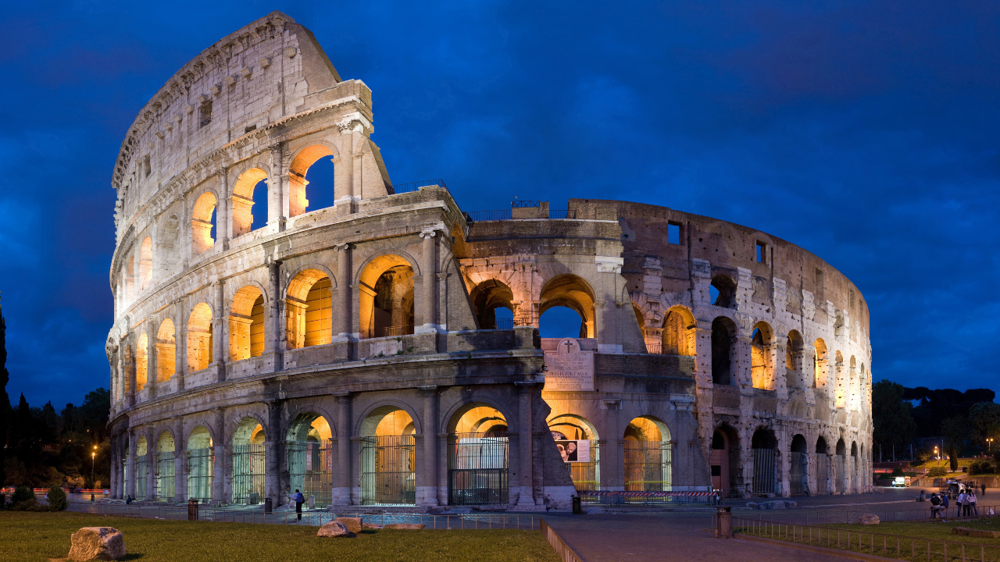
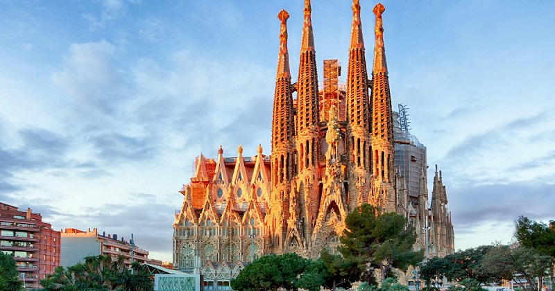
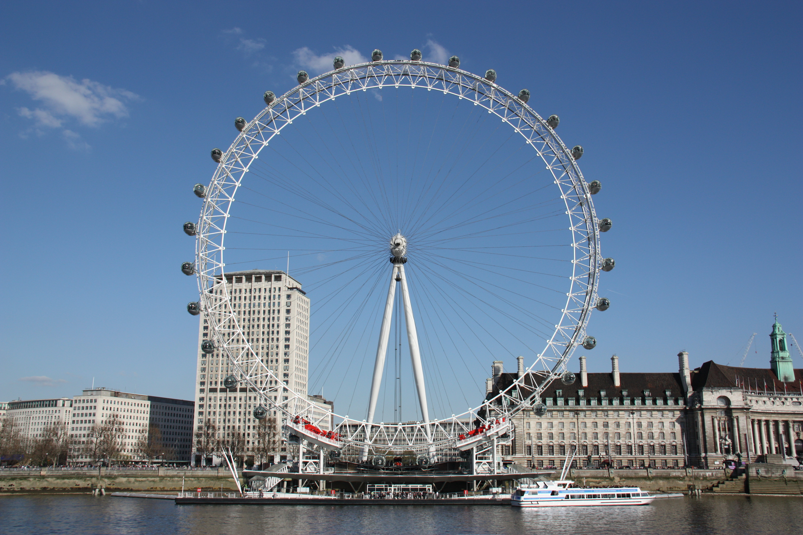
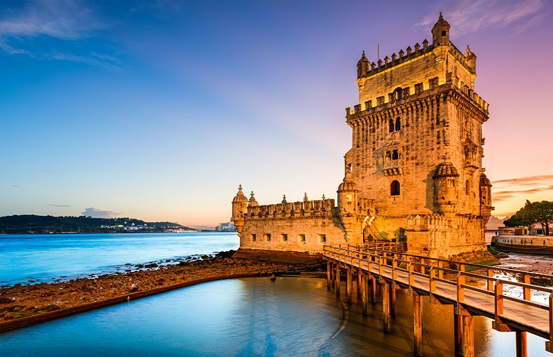

-
Coliseu (Roma, Itália)

O Coliseu de Roma, um dos monumentos mais icônicos do mundo, atrai milhões de turistas anualmente. Construído no ano 72 d.C., foi palco para épicas batalhas de gladiadores e espetáculos para uma plateia de até 70 mil pessoas. Sua grandiosidade e história tornam a visita obrigatória para quem explora Roma e a Itália. Se está organizando uma viagem para a região, é importante garantir o ingresso com antecedência para aproveitar essa incrível experiência sem perder tempo em filas.
-
Sagrada Família (Barcelona, Espanha)

Sagrada Família de Barcelona, projetada pelo renomado arquiteto Antoni Gaudí, é um dos pontos turísticos mais emblemáticos da Espanha. Apesar de ainda não concluída, sua grandiosidade e detalhes atraem visitantes de todo o mundo. Mesmo em constante construção há 135 anos, é possível explorar seu interior e se encantar com a beleza única do local. Um destino imperdível para quem visita Barcelona e um verdadeiro símbolo da arquitetura modernista espanhola.
-
Torre Eiffel (Paris, França)

A Torre Eiffel de Paris não poderia ficar de fora desta lista. Construída em 1889, com impressionantes 325 metros de altura e 1.665 degraus, é um imperdível ponto turístico quando se está na Cidade Luz. Visível de diversos pontos da capital francesa, a Torre Eiffel é mais do que um monumento, é um símbolo nacional. Além da deslumbrante vista da cidade, ao redor da torre você encontrará uma variedade de restaurantes para desfrutar da culinária francesa. É importante também garantir os ingressos com antecedência para evitar longas filas e aproveitar ao máximo a visita.
-
London Eye (Londres, Reino Unido)

A London Eye , também conhecida como Roda do Milênio, foi aberta ao público em fevereiro de 2000. Construída como um símbolo londrino para o novo milênio, o projeto foi desenvolvido pelos arquitetos Julia Barfield e David Marks, inicialmente para um concurso do jornal The Sunday Times. Com 135 metros de altura e 32 cabines que comportam 25 pessoas, a London Eye já foi a maior roda-gigante do mundo. Apesar de perder esse título para uma estrutura na China, permanece icônica como um dos principais pontos turísticos de Londres.
-
Torre de Belém (Lisboa, Portugal)

Localizada em Lisboa, a Torre de Belém é um dos principais pontos turísticos de Portugal e um marco da era das navegações. Construída entre 1514 e 1520 para proteger a cidade de invasores, a torre também serviu como prisão, aduaneira, telégrafo e farol ao longo dos anos. Em 1983, foi declarada Patrimônio da Humanidade pela UNESCO, tornando-se um destino imperdível para quem visita Lisboa e Portugal.